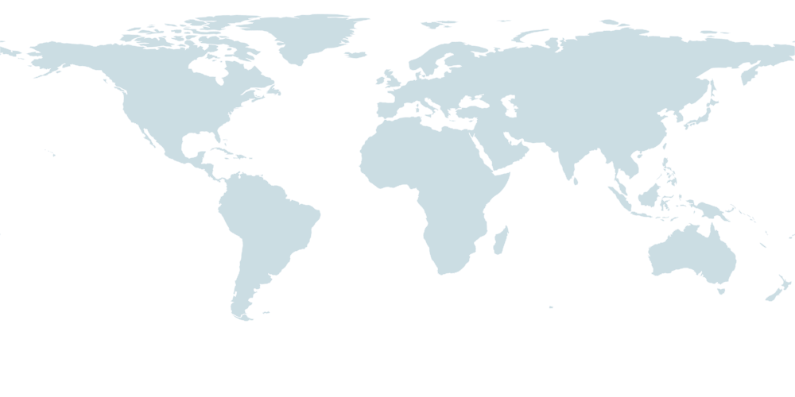

AROUND THE WORLD
어디에서 찾아왔을까요?

—회 방문 —개국
방문 통계를 불러오는 중…
점은 국가별 대표 위치이며, 개별 IP와 접속 위치는 공개하지 않습니다.
VPN을 사용하면 실제 위치와 다른 국가로 표시될 수 있습니다.
CONNECTION
AROUND THE WORLD

—회 방문 —개국
방문 통계를 불러오는 중…
점은 국가별 대표 위치이며, 개별 IP와 접속 위치는 공개하지 않습니다.
VPN을 사용하면 실제 위치와 다른 국가로 표시될 수 있습니다.